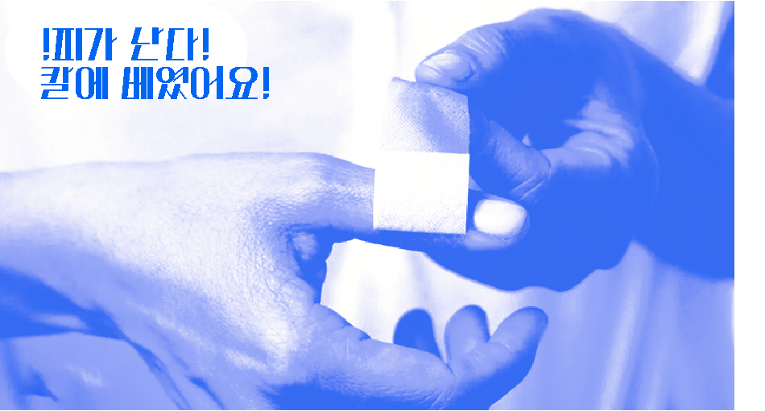

상처 치료의 역사


소독 후 밴드를 붙이는 건 굉장히 쉽고 간단한 치료법으로
보이지만, 20세기 이전까지는
생각도 하지 못한
매우 현대적이고, 진보된
치료방법 입니다.
심지어 과거 사람들은 현대인에 비해 훨씬 다칠 일이 많았죠.
대체 어떻게 살아남은 걸까요?
고문하면 인두로 사람을 지지는 모습이 떠오르곤 합니다.
근데, 사실 불고문은 상처를 지혈하는 과정에서 시작됐을 수도 있다는 거 아시나요?
문명이 굉장히 발달한 이집트에서는 불로 상처를 지져 지혈하는 방법을 찾아냈습니다.
동시에 불로 사람을 지지면 굉장히 아프구나!란 사실도 알아낸거죠.
불을 사용하면 피가 멎긴 멎었습니다...만
상처보다 화상의 감염이 훨씬 컸기에 오히려 악화되어 사망하는 일도 많았습니다.
히포크라테스는 고대 그리스의 의사로, 의학사의 가장 중요한 인물 중 하나입니다. 그의 등장 이후 의학이 비약적으로 발전했죠.
그러나 상처치료에 있어서도 그랬을까요?
물론 전에 비해서 발전을 했습니다. 상처부위를 심장보다 높이 들기도 했고, 상처부위에 솜을 쑤셔박아 피를 멈추게 했어요. 포도주를 적신 천을 사용해 소독의 효과도 봤을 겁니다.
그러나 여전히 위생의 개념은 등장하지 않습니다. 더러운 때가 묻은 양털을 그대로 상처에 넣으니 감염이 일어날 수 밖에요.
그리고 그리스가 사라지며 이 때의 의학지식은 사장됩니다.
중세시대는 암흑기라고 불립니다.
의료기술 또한 퇴보한 시기였죠.
이 시대에선 무려 상처가 썩는 것이 치료법이라고 생각했습니다!
상처가 썩을 때까지 지켜보다가, 상처가 썩으면 그 부위를 잘라냈죠.
그리곤 지혈을 위해 끓는 기름을 부었습니다.
화상은 오히려 감염을 부르니...
살아남는 사람은 몇이나 되었을까요?
녹슨 금속을 상처에 바르면 어떻게 될까요? 파상풍에 걸립니다.
파상풍에 걸려 썩은 상처를 잘라내다 보니 절단술이 발전할 정도였죠.
그래서 다 썰어버립니다.
미국 남북전쟁 부상자의 30퍼센트는 절단을 경험했다고 해요.
19세기 말에 드디어 손을 씻어야한다는 개념이 나왔습니다!
그와 함께 상처도 씻어내야한다는 생각이 퍼지며 소독의 개념이 시작되었죠.
그리고 나이팅게일이 위생과 소독의 개념을 환자들에게 적용하며 감염으로 인한 사망율이 급감했습니다.
무려 40%에서 2%로 말이죠.